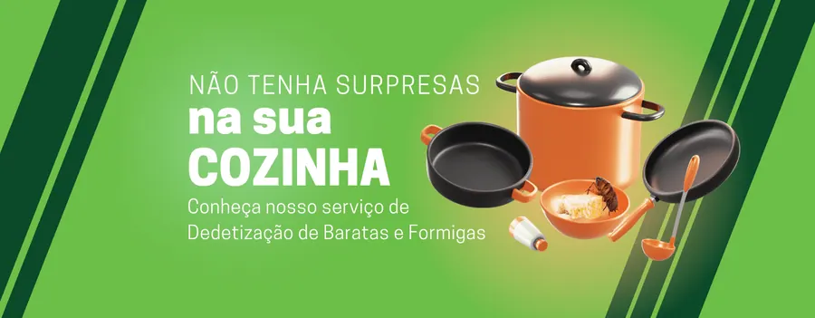
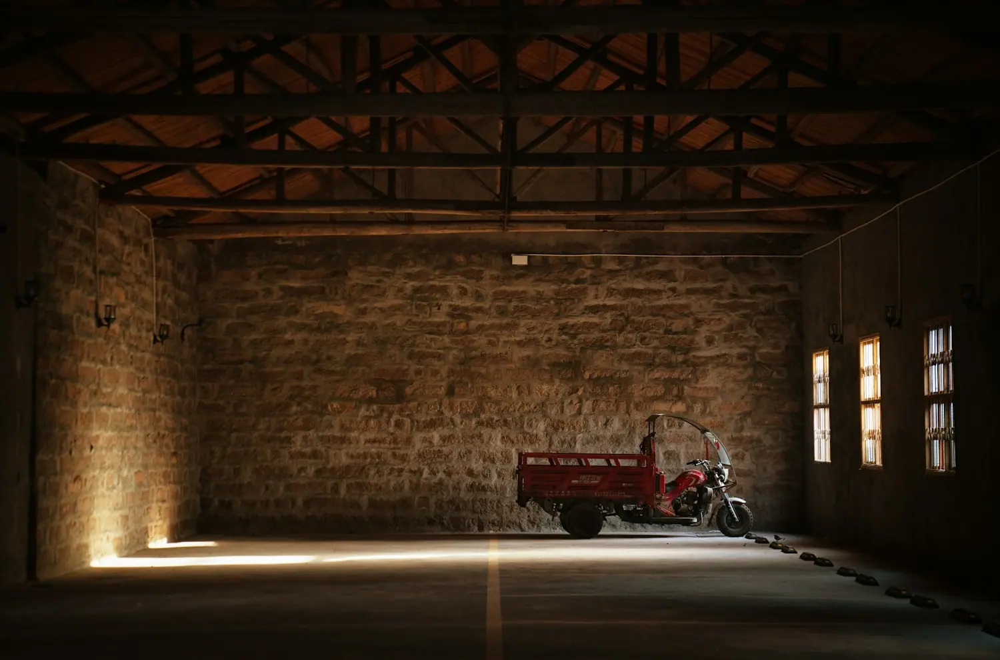
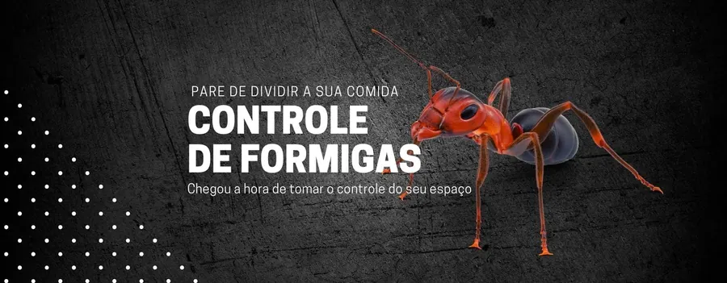

Corporativo
Conheça o Programa M.I.P., Manejo Integrado em Controle de Pragas, que é o melhor sistema para empresas e indústrias em geral.
Utilizamos equipamentos com alta tecnologia para atender desde clientes residenciais e pequenos comércios até fábricas, indústrias e grandes empresas. Nossa missão é prestar os melhores serviços, com cuidado e segurança para o meio ambiente.

Qual é a sua necessidade?

Conheça o Programa M.I.P., Manejo Integrado em Controle de Pragas, que é o melhor sistema para empresas e indústrias em geral.
Garanta segurança em supermercado, redes de farmácias, hotéis, pousadas, galpões, garagens de ônibus, entre outros.

Garanta um lar saudável e seguro sem as pragas urbanas que transmitem doenças e trazem transtornos.
Soluções
Sua empresa ou residência não merece abrigar pragas urbanas nocivas para a saúde das pessoas e bens em geral. Garanta a intervenção da equipe treinada e qualificada da BioSP.
Pragas que controlamos
Programa M.I.P.
O melhor sistema para empresas e indústrias em geral. Os cupins, por exemplo, realizam uma infestação silenciosa e podem entrar no seu espaço com a revoada. Se houver infestação, é essencial contar com um controle eficaz.
Por que escolher a BioSP
Clientes
Super recomendamos a BioSP. Desde o primeiro contato até a realização do controle, fomos super bem atendidos. Uma empresa séria, com ótimo preço de mercado. Estamos há mais de um ano em parceria, e até aqui obtivemos muito sucesso.
Ester Milene Leal — Belo Doce AtacadistaIndicamos e agradecemos a BioSP pelo excelente trabalho, atendimento e transparência com o cliente. São extremamente pontuais e organizados. Confiamos nossas franquias somente a BioSP.
Leticia Pansani — Dr. ToxicológicoA BioSP é um dos meus parceiros preferidos, pois além do ótimo custo-benefício, eles nos atendem prontamente toda vez que precisamos de soluções para os controles de pragas.
Mirna Hitomi Sato — Mac Oriental FoodContato
Atendimento operacional 24 horas. Comercial de segunda a sexta, das 9h às 18h.